卷積 Convolution
定義
卷積 (Convolution) 是一種數學運算，代表一個函數的平移加權疊加，和傅立葉級數有相似的地方
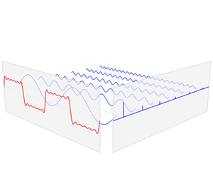
傅立葉級數：用不同的正弦函數乘上係數後加總，也就是
卷積運算：用同一函數的平移乘上係數後加總，也就是
從圖像看卷積的意義
要理解卷積運算從離散的函數來理解比較容易
看例子：
已知 \(\begin{cases}x[0] = a\\x[1] = b\\x[2]=c\end{cases}\)
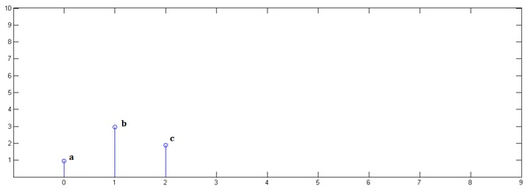
已知 \(\begin{cases}y[0] = i\\y[1] = j\\y[2]=k\end{cases}\)
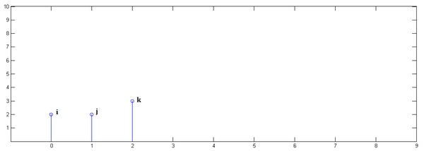
下面通過演示求 \((x*y)[n]\) 的過程，揭示卷積的物理意義。
第一步： \(x[n]\) 乘以 \(y[0]\) 並平移到位置 0
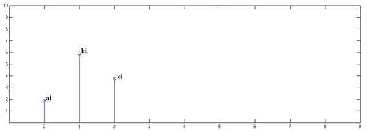
第二步： \(x[n]\) 乘以 \(y[1]\) 並平移到位置 1
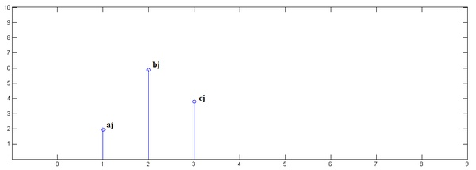
第三步： \(x[n]\) 乘以 \(y[2]\) 並平移到位置 2
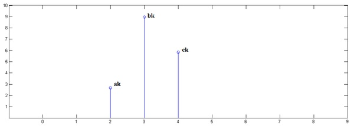
最後，把上面三個圖疊加，就得到了 \((x*y)[n]\)
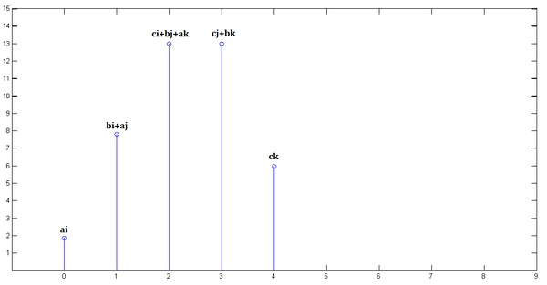
這就是為什麼卷積的離散形式被定義為
註：卷積具有交換律，\((f*g)[n] = (g*f)[n]\)，所以哪一個函數是 \(n-m\) 結果一樣
連續形式為
另一種角度
在許多地方常常可以看到有人說卷積是對 \(\tau=0\) 鏡射後再往 \(+\tau\) 方向滑過去，為什麼會這樣？不是說卷積是平移加權疊加嗎？為什麼又冒出這種說法了？
其實這兩種說法都對，只是看的角度不一樣。
前面的看法是把 \(\sum\) 或 \(\int\) 中的每一項(即平移加權)拉出來看，換言之看的是 \(m\) 或 \(\tau\) 變動的情況
後面的看法是看 \(n\) 或 \(t\) 變動的情況，也就是新函數上的某個點是由原函數上的哪些點加權組合而成的，是一種局部的概念
以同一個例子來看
這裡是原函數
|  |  |
然後來看 \(n\) 變動的情況
|  |
\((x*y)[0]\) |
|  |
\((x*y)[1]\) |
|  |
\((x*y)[2]\) |
|  |
\((x*y)[3]\) |
|  |
\((x*y)[4]\) |
以 \(n=2\) 的情況為例。
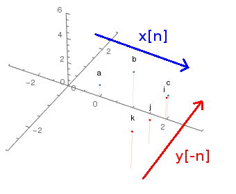
當 \(m=0\)，\(i\) 先乘上\(c\)，然後 \(x[n]\) 往右移，所以 \(m=1\) 時 \(j\) 會去乘 \(b\) ，然後 \(x[n]\) 再右移， \(m=2\) 時 \(k\) 乘上 \(a\)，在張圖裡就是乘完一次後兩函數同時沿箭頭方向移動一格然後再乘。
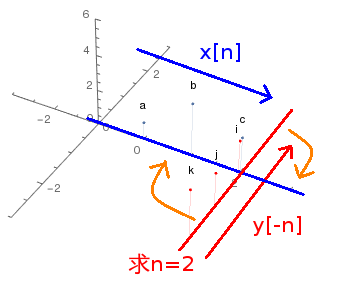
仔細看這張圖，你會發現當我要求 \((x*y)[2]\) 時，\(y[-n]\) 的 \(n=0\) 會放在 \(x[n]\) 的 \(n=2\) 的地方，如果將兩函數沿著橘色箭頭方向疊起來的話，就會跟
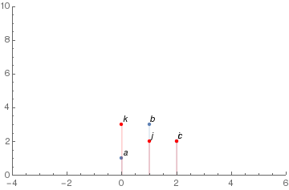
一模一樣了。
所以連續 \(n\) 時，\(y[-n]\) 放的位置會由左往右滑過去，疊起來後，計算卷積看起來就會像鏡射的 \(y[n]\) 由左往右滑過去一樣，仔細對照上面一系列的圖。
這就是下圖的由來
|  |
   |
要求 \((f*g)[-1]\) 時，\(g[-x]\) 的 \(x=0\) 會放在 \(f[x]\) 的 \(x=-1\) 的地方
神經網路中的二維圖像卷積
嚴格來說，神經網路中的卷積應該是指離散互相關(discrete cross-correlations)，跟這裡所談的數學上的卷積只差了一個負號。
對於圖像的卷積同樣能夠用兩種角度來看
已知 4 x 4 (灰階)圖像 \(A= \begin{bmatrix}1&2&3&4 \\5&6&7&8 \\9&10&11&12 \\ 13&14&15&16 \end{bmatrix}\)，以及 2 x 2 卷積核(參數) \(k= \begin{bmatrix}0.1&0.2 \\0.3&0.4 \end{bmatrix}\)
矩陣左上角都是 \((1,1)\)，並且以 \((1,1)\) 為參考點
重複前面例子的步驟
第一步：\(A\) 乘以 \(k_{11}\) 並平移到位置 \((1,1)\)，得 \(\begin{bmatrix}0.1&0.2&0.3&0.4&0\\0.5&0.6&0.7&0.8&0\\0.9&1.0&1.1&1.2&0\\1.3&1.4&1.5&1.6&0\\0&0&0&0&0 \end{bmatrix}\)
第二步：\(A\) 乘以 \(k_{12}\) 並平移到位置 \((1,2)\)，得 \(\begin{bmatrix}0&0.2&0.4&0.6&0.8\\0&1.0&1.2&1.4&1.6\\0&1.8&2.0&2.2&2.4\\0&2.6&2.8&3.0&3.2\\0&0&0&0&0 \end{bmatrix}\)
第三步：\(A\) 乘以 \(k_{21}\) 並平移到位置 \((2,1)\)，得 \(\begin{bmatrix}0&0&0&0&0\\0.3&0.6&0.9&1.2&0\\1.5&1.8&2.1&2.4&0\\2.7&3.0&3.3&3.6&0\\3.9&4.2&4.5&4.8&0 \end{bmatrix}\)
第四步：\(A\) 乘以 \(k_{22}\) 並平移到位置 \((2,2)\)，得 \(\begin{bmatrix}0&0&0&0&0\\0&0.4&0.8&1.2&1.6\\0&2.0&2.4&2.8&3.2\\0&3.6&4.0&4.4&4.8\\0&5.2&5.6&6.0&6.4 \end{bmatrix}\)
最後，把上面四個圖疊加，就得到了 \(\begin{bmatrix}0.1&0.4&0.7&1.0&0.8\\0.8&2.6&3.6&4.6&3.2\\2.4&6.6&7.6&8.6&5.6\\4.0&10.6&11.6&12.6&8.0\\3.9&9.4&10.1&10.8&6.4 \end{bmatrix}\)
但是你可以看到，對於新圖像的一個點其實只受到原圖像周圍點的影響，也就是圖像的卷積具有局部性，這樣用第二種角度來看就會很方便。
在一維中我們把其中一個函數對 \(\tau=0\) 鏡射，這裡則要讓卷積核對 \((1,1)\) 鏡射，也就是旋轉 180° (其實鏡射圖像也可以，但圖像保持原樣看起來比較直觀)，得 \(k^\prime=\begin{bmatrix}0.4&0.3 \\0.2&0.1 \end{bmatrix}\) 。
同時對原圖像 \(A\) 進行 zero-padding，得 \(A^\prime= \begin{bmatrix}0&0&0&0&0&0\\0&1&2&3&4&0\\0&5&6&7&8&0 \\0&9&10&11&12&0\\0&13&14&15&16&0\\0&0&0&0&0&0 \end{bmatrix}\) ，這樣做卷積的時候邊邊才可以完整做到。
一樣以 \((1,1)\) 為參考點，然後讓 \(k^\prime\) 在 \(A^\prime\) 上滑動，相乘，然後相加
...
...
註：\(.*\) 是矩陣內元素相乘，\(\sum\) 矩陣是矩陣內元素和
最後把新矩陣疊加，同樣可以得到 \(\begin{bmatrix}0.1&0.4&0.7&1.0&0.8\\0.8&2.6&3.6&4.6&3.2\\2.4&6.6&7.6&8.6&5.6\\4.0&10.6&11.6&12.6&8.0\\3.9&9.4&10.1&10.8&6.4 \end{bmatrix}\)，與前面結果相同
如果沒有 zero-padding，得到的就是中間的 \(\begin{bmatrix}2.6&3.6&4.6\\6.6&7.6&8.6\\10.6&11.6&12.6 \end{bmatrix}\)
用這個角度來看所得到的就是這些最有名的這些圖
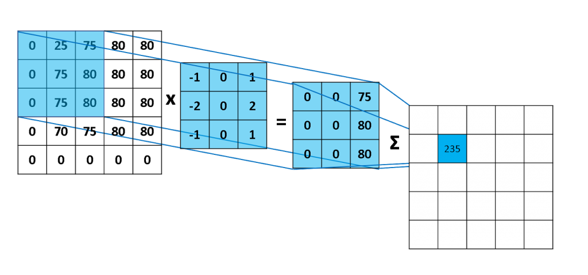
|  |  |
以上的就是卷積神經網路 (Convolutional Neural Network) 的基礎
註：卷積針對的其實是函數，那為什麼在這裡可以直接用矩陣來看？因為我們可以把這裡的函數視作 \(A^\prime[x,y] = \begin{cases}a_{ij} &A^\prime=(a_{ij}) \\0 & otherwise\end{cases}\) 這樣一個函數 ( \(k^\prime[x,y]\) 同理)，所以我們實際上就是在對兩函數作卷積。但因為 0 乘上任何數都是 0，不影響結果，所以只看矩陣(不為0)的部份結果會相同，可以簡化運算和方便理解。
參考資料：
Convolution - Wikipedia
如何通俗易懂地解释卷积？ - 知乎
Understanding Convolutions - colah's blog
How to explain in a simple manner what convolution is and why it is important - Quora
Convolutional Neural Networks - Basics · Machine Learning Notebook
計算用到的 MATLAB Script
convolution.m
% image
%{
A = [0, 0, 0, 0, 0;
0, 0, 0, 0, 0;
0.5, 0.5, 0.5, 0.5, 0.5;
1, 1, 1, 1, 1;
1, 1, 1, 1, 1]
%}
A = rgb2gray(imread('android.png'));
% imshow(A)
[dim_i, dim_j] = size(A);
% horizontal Sobel filter
kernel_ho = [-1 -2 -1;
0 0 0;
1 2 1];
% vertical Sobel filter
kernel_ve = kernel_ho';
for i = 1:dim_i-2
for j = 1:dim_j-2
co_ho(i,j) = sum(sum(double(A(i:i+2,j:j+2)).*kernel_ho));
co_ve(i,j) = sum(sum(double(A(i:i+2,j:j+2)).*kernel_ve));
end
end
subplot(2,2,1), imshow(A);
subplot(2,2,2), imshow(co_ho/max(max(co_ho)));
subplot(2,2,4), imshow(co_ve/max(max(co_ve)));
subplot(2,2,3), imshow(co_ho/max(max(co_ho))+co_ve/max(max(co_ve)))
convolution2.m
% 2D image
a = [1:4;5:8;9:12;13:16]
% convolution kernel
k = [0.1,0.2;0.3 0.4]
% viewpoint 1
a11 = zeros(5,5); a11(1:4,1:4) = a * k(1,1)
a12 = zeros(5,5); a12(1:4,2:5) = a * k(1,2)
a21 = zeros(5,5); a21(2:5,1:4) = a * k(2,1)
a22 = zeros(5,5); a22(2:5,2:5) = a * k(2,2)
con1 = a11 + a12 + a21 + a22
% viewpoint 2
a_padding = zeros(6,6); a_padding(2:5,2:5) = a;
for i = 1:size(a_padding,1)-size(k,1)+1
for j = 1:size(a_padding,2)-size(k,2)+1
con2(i,j) = sum(sum(a_padding(i:i+1,j:j+1) .* rot90(k,2)));
end
end
con2
畫圖用到的 Mathematica Script
ListPlot[{Labeled[{0, 1}, a], Labeled[{1, 3}, b], Labeled[{2, 2}, c]},
Filling -> Automatic, PlotRange -> {{-1, 9}, {0, 10}},
AxesOrigin -> {-1, 0}]
ListPlot[{Labeled[{0, 2}, i], Labeled[{1, 2}, j], Labeled[{2, 3}, k]},
PlotStyle -> RGBColor[1., 0., 0.], Filling -> Automatic,
PlotRange -> {{-1, 9}, {0, 10}}, AxesOrigin -> {-1, 0}]
Show[ListPlot[{Labeled[{0, 1}, a], Labeled[{1, 3}, b],
Labeled[{2, 2}, c]}, Filling -> Automatic,
PlotRange -> {{-4, 6}, {0, 10}}, AxesOrigin -> {-4, 0}],
ListPlot[{Labeled[{0, 2}, i], Labeled[{-1, 2}, j],
Labeled[{-2, 3}, k]}, PlotStyle -> RGBColor[1.`, 0.`, 0.`],
Filling -> Automatic, PlotRange -> {{-4, 6}, {0, 10}},
AxesOrigin -> {-4, 0}]]
Show[ListPlot[{Labeled[{0, 1}, a], Labeled[{1, 3}, b],
Labeled[{2, 2}, c]}, Filling -> Automatic,
PlotRange -> {{-4, 6}, {0, 10}}, AxesOrigin -> {-4, 0}],
ListPlot[{Labeled[{1, 2}, i], Labeled[{0, 2}, j],
Labeled[{-1, 3}, k]}, PlotStyle -> RGBColor[1.`, 0.`, 0.`],
Filling -> Automatic, PlotRange -> {{-4, 6}, {0, 10}},
AxesOrigin -> {-4, 0}]]
Show[ListPlot[{Labeled[{0, 1}, a], Labeled[{1, 3}, b],
Labeled[{2, 2}, c]}, Filling -> Automatic,
PlotRange -> {{-4, 6}, {0, 10}}, AxesOrigin -> {-4, 0}],
ListPlot[{Labeled[{2, 2}, i], Labeled[{1, 2}, j],
Labeled[{0, 3}, k]}, PlotStyle -> RGBColor[1.`, 0.`, 0.`],
Filling -> Automatic, PlotRange -> {{-4, 6}, {0, 10}},
AxesOrigin -> {-4, 0}]]
Show[ListPlot[{Labeled[{0, 1}, a], Labeled[{1, 3}, b],
Labeled[{2, 2}, c]}, Filling -> Automatic,
PlotRange -> {{-4, 6}, {0, 10}}, AxesOrigin -> {-4, 0}],
ListPlot[{Labeled[{3, 2}, i], Labeled[{2, 2}, j],
Labeled[{1, 3}, k]}, PlotStyle -> RGBColor[1.`, 0.`, 0.`],
Filling -> Automatic, PlotRange -> {{-4, 6}, {0, 10}},
AxesOrigin -> {-4, 0}]]
Show[ListPlot[{Labeled[{0, 1}, a], Labeled[{1, 3}, b],
Labeled[{2, 2}, c]}, Filling -> Automatic,
PlotRange -> {{-4, 6}, {0, 10}}, AxesOrigin -> {-4, 0}],
ListPlot[{Labeled[{4, 2}, i], Labeled[{3, 2}, j],
Labeled[{2, 3}, k]}, PlotStyle -> RGBColor[1.`, 0.`, 0.`],
Filling -> Automatic, PlotRange -> {{-4, 6}, {0, 10}},
AxesOrigin -> {-4, 0}]]
Plot[UnitBox[x], {x, -2, 2}, Filling -> Bottom, AspectRatio -> 1/4,
PlotLabel -> "f(x) = rect(x)", PlotRange -> {{-2, 2}, {0, 1}}]
Plot[UnitBox[x], {x, -2, 2}, Filling -> Bottom, AspectRatio -> 1/4,
PlotLabel -> "g(x) = g(-x) = rect(x-1)",
PlotRange -> {{-2, 2}, {0, 1}}]
Plot[UnitBox[x + 1], {x, -2, 2}, Filling -> Bottom,
AspectRatio -> 1/4, PlotLabel -> "g(1-x)",
PlotRange -> {{-2, 2}, {0, 1}}]
Show[{
ListPointPlot3D[{{0, 0, 1}, {1, 0, 3}, {2, 0, 2}},
Filling -> Bottom, PlotRange -> {{-3, 3}, {-3, 3}, {0, 6}},
AxesOrigin -> {-1, 0, 0}],
ListPointPlot3D[{{2, 0 - 0.1, 2}, {2, -1 - 0.1, 2}, {2, -2 - 0.1,
3}}, PlotStyle -> RGBColor[1.`, 0.`, 0.`], Filling -> Bottom,
PlotRange -> {{-3, 3}, {-3, 3}, {0, 6}}, AxesOrigin -> {-1, 0, 0}],
Graphics3D[{Text["a", {0, 0, 1 + 1}], Text["b", {1, 0, 3 + 1}],
Text["c", {2, 0, 2 + 1}], Text["i", {2, 0 - 0.1 - 0.2, 2 + 1}],
Text["j", {2, -1 - 0.1, 2 + 1}],
Text["k", {2, -2 - 0.1, 3 + 1}]}]}, Boxed -> False]